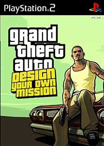

1. Legacy & Historical Context
grand Theft Auto San Andreas Dyom stands as one of the most memorable and celebrated experiences on the PS2 platform. First emerging in Classic, the title captivated players worldwide through its distinctive design, memorable atmosphere, and technical prowess that pushed the system to its full capacity.
Boasting an average community score of 4.44 out of 5 and cherished by 1,591 registered fans, grand Theft Auto San Andreas Dyom continues to hold a revered spot in retro gaming history. Whether revisited for nostalgia or explored for the first time, its legacy remains undisputed.
Why Play on Android?
On modern Android devices, grand Theft Auto San Andreas Dyom benefits from high-definition upscaling, stable 60 FPS performance, quick-save states, and tactile controller integration through recommended mobile emulator setups.
2. Gameplay Mechanics & Visuals
Categorized under the Action Adventure genre, the gameplay loop strikes an engaging balance between challenging mechanics and rewarding progression. Level pacing, responsive handling, and finely crafted scenarios keep the experience fresh from start to finish.
Visually, the art direction showcases the distinctive charm of the PS2 era. Character models, animations, and sound effects work in harmony to deliver an enduring cinematic experience.
3. Optimal Mobile Emulation Settings
To ensure the smoothest performance without battery drain or overheating, our team recommends the following settings on Android devices:
- Backend Renderer: Vulkan (or OpenGL for older devices)
- Internal Resolution: 2x Native (1080p equivalent) on mid-range devices; 3x Native on flagship Snapdragon/Dimensity processors
- Texture Filtering: Linear or Bicubic for crisper UI and textures
- Audio Latency: Set to Medium or Low to avoid audio crackling
- Controller Support: Compatible with Bluetooth gamepads (Xbox, DualSense, Razer Kishi)
4. Final Verdict & Review Score
Overall romstofun Score
Community Choice & Verified Playable
Ready to Play on Your Android Device?
Get the companion application on Google Play for one-tap controller profiles, optimal settings, and seamless emulation.
Get on Google Play ↗